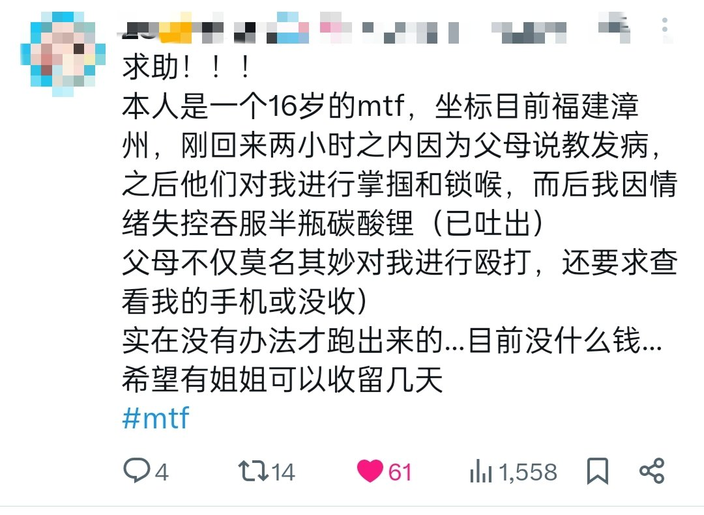

你说要是都像这样十几岁和父母闹崩了，被扫地出门，连个家也没有，不说他有多可怜多没未来。就从救助者的角度来说，这么多人救得过来吗。那得要多少钱。大家也不是大富大贵，咋可能养十几号小朋友吃饭的嘴，更不要说送他们上学了。
就算是从救助者的角度，也要大力引导有条件的人努力去学习，这不仅是扩大知道生活苦、以后会帮助别人的底层出身精英的数量。同时也是让有能力有文化条件自己养活自己不用接受援助的人都滚去自力更生。把资源分配给真的社会化完全失败完全活不下去的那种人。
做好事必须要讲求效率。不能帮一个算一个。那是绝对错误的。

就算是从救助者的角度，也要大力引导有条件的人努力去学习，这不仅是扩大知道生活苦、以后会帮助别人的底层出身精英的数量。同时也是让有能力有文化条件自己养活自己不用接受援助的人都滚去自力更生。把资源分配给真的社会化完全失败完全活不下去的那种人。
做好事必须要讲求效率。不能帮一个算一个。那是绝对错误的。

你说要是都像这样十几岁和父母闹崩了，被扫地出门，连个家也没有，不说他有多可怜多没未来。就从救助者的角度来说，这么多人救得过来吗。那得要多少钱。大家也不是大富大贵，咋可能养十几号小朋友吃饭的嘴，更不要说送他们上学了。 https://t.co/0MACaO9ERm